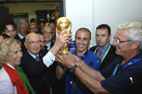

ФУТБОЛ
Полное англоязычное название игры, «association football» («футбол по правилам Ассоциации»), было выбрано после создания английской Футбольной ассоциации в 1863 году, чтобы отличать эту игру от других разновидностей футбола, существовавших в то время, например регби-футбол («rugby football», «футбол по правилам Школы Рагби»), где была разрешена игра руками.
Со временем длинные названия вариантов игры стали сокращаться в повседневной речи и печати. Сначала в Англии было распространено сокращение «assoc.», затем в 1880-х годах от него образовался термин «соккер» (англ. soccer) путём добавления к сокращению «-soc-» суффикса «-er» на оксфордский манер[en] (по аналогии регби-футбол сокращённо назывался «раггер» (англ. rugger))[4]. В периодике термин «соккер» используется по крайней мере с 1892 года[5].
ГЛАВНОЕ НЕ ПОБЕДА, А УЧАСТИЕ!